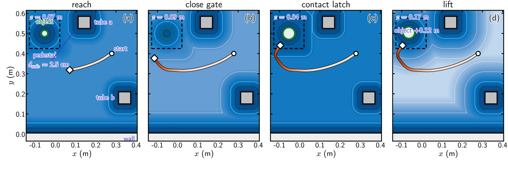
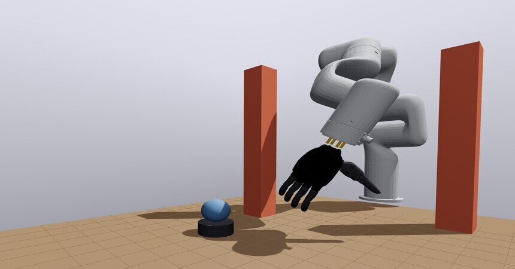
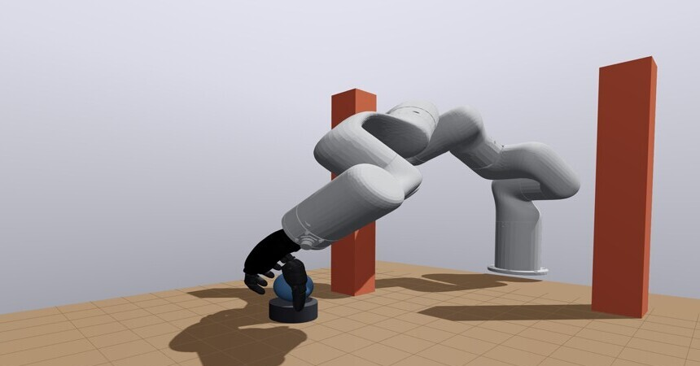
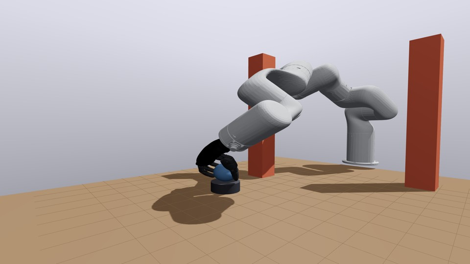
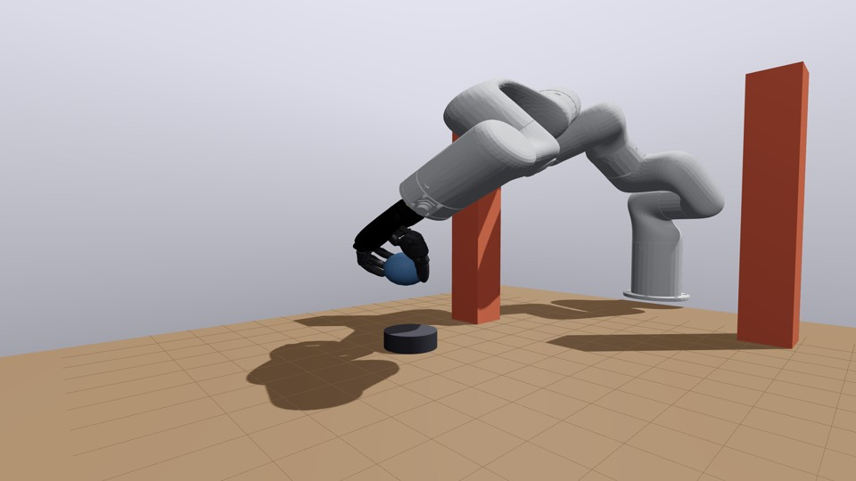
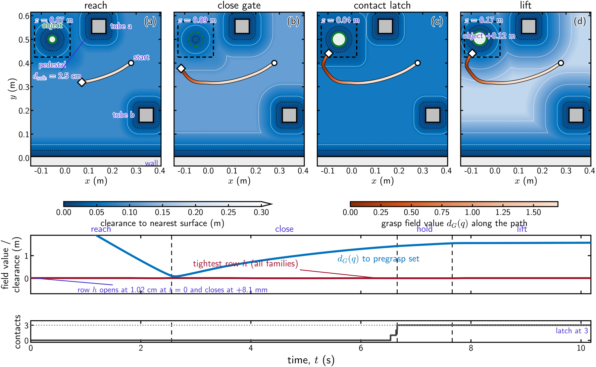

Institute for Systems Research, University of Maryland, College Park, MD, U.S.A.
Standard multifingered grasp execution architectures plan a collision-free trajectory to a selected grasp pose and track it with a feedback law. Execution-time object pose uncertainty or perturbations may invalidate the planned trajectory, forcing a costly replanning step. We present Grasp Distance Fields (GDFs), smooth softmin distance fields over grasp configurations in the arm-hand configuration space. Our controller executes a grasp by following this field's negative gradient with a stationary feedback law, eliminating the need for a planner, stored trajectory, or grasp selection. For safety, we filter this command through a CBF-CLF quadratic program (QP) constraining self-collision, workspace, object, and obstacle clearance, reporting impeded progress as explicit slack. We prove that the softmin tracks the true set distance within $\log N/\rho$ for $N$ candidates and smoothing parameter $\rho$, and that the filtered control input renders the safe set forward invariant. Since no smooth field captures hand-object contact switching, we switch modes with hysteresis at a pregrasp configuration, trading object collision avoidance for contact admission. A wrench-quality barrier then keeps the realized grasp's force-closure margin within a prescribed tolerance of its value at hold onset. We evaluate in kinematic simulation on a fixed-base arm and a Unitree G1 humanoid, both fitted with the same underactuated hand. Our controller navigates cluttered and dynamic scenes to safely reach for, grasp, and lift 46 of 50 test objects spanning primitive, household, and adversarial classes. Across those lifts, the executed grasps retain a median 94% of their synthesized quality margin, at 0.09 ms QP solve time per 20 ms control step. Per-step softmax weights confirm that our controller executes the nearest grasp candidate, obviating a separate selection step.
In our framework, the controller's target is a set of certified pregrasp configurations instead of a single grasp pose. Over pregrasp configurations, $q^{\text{pre}}_i$, we compute the distance field as a log-sum-exp softmin under a diagonal metric, $\Lambda$, that weights the arm above the hand, $d_G(q) = -\tfrac{1}{\rho}\log \sum_i \exp(-\rho\,\lVert q^{\text{pre}}_i - q\rVert_\Lambda)$. It tracks the true set distance within $\log N/\rho$, its gradient is a convex combination of unit directions, and the negative gradient points toward whichever candidate lies nearest, obviating a separate grasp candidate selection step. A CBF-based quadratic program with a linear class-$\mathcal{K}$ rate filters the nominal command, and an admission test eliminates any candidate whose pregrasp or closure violates a barrier constraint, so that the target set contains only certified grasps.
GDFs are softmin functions defined over certified pregrasp configurations in joint space, making them smooth with a bounded gradient and a parameterized gap to the (hard) true minimum.
At our controller's core is a CBF QP over self-collision, workspace, object, and obstacle constraints, with the underactuated hand's joint dependence represented as equality constraints.
We model the entire execution task as a hybrid system over discrete arm-hand modes, with a hysteretic contact switch that admits hand-object contacts.
We evaluate the executed grasp under the same risk-adjusted force-closure margin we used to certify its descriptor, and we report the fraction of the synthesized margin the executed grasp keeps.
We instantiate the same architecture on a Unitree G1 humanoid, changing only the scene data.





We playback trajectory data from representative trials of the three reach-avoid-stay grasping scenarios reported in our paper, .viz the tabletop arm-hand system (with static obstacles), the tabletop arm-hand system (operating in a workspace with a dynamic obstacle), and the Unitree G1 humanoid (in a workspace with static obstacles). The tabs below switch between each case. Move the sliders to preview the timeline. Below the sliders, we report per-step values of the distance field, the minimum barrier function margin, and the number of contacts across the system's four execution modes, namely REACH, CLOSE, HOLD, and LIFT.
Top-down map of the workspace. The palm follows the grasp field, the shaded well around the target, and the bar at the right edge shows the lift height.
Our controller completes the full reach-grasp-lift sequence on 46 of the 50 objects, with each object sited so that its arm-approach path is obstructed by at least one obstacle. Our test objects span four (4) geometric primitives, 17 YCB household objects, and 29 adversarial EGAD meshes. We evaluate 48 realized grasps in all (accounting for the two test objects where the hand failed to attain a minimum of three contacts within the prescribed time window (700 steps)). 37 of these grasps satisfy $\varepsilon_{\mathrm{exec}}^{(\beta)} \ge 0$ at $\beta = 0.9$. Over the same set and on the min-weight metric ($\ell^{*}$), 39 grasps (that also include the $\varepsilon_{\mathrm{exec}}^{(\beta)} \ge 0$ set) score as force-closed${}^{\dagger}$.
| Object class | Objects | Lift | $\varepsilon^{(\beta)} \ge 0$ | $\ell^{*}$ | Margin ≥ 0.3 |
|---|---|---|---|---|---|
| Primitives | 4 | 4 | 3 | 3 | 2 |
| YCB household | 17 | 14 | 12 | 12 | 10 |
| EGAD adversarial | 29 | 28 | 22 | 24 | 18 |
| All | 50 | 46 | 37 | 39 | 30 |
${}^{\dagger}$Our controller failed on four of the 50 trials, but each failure stemmed from convergence and not safety. In two trials, the robotic hand did not attain the three contacts required by the CLOSE-HOLD guard within the prescribed 700-step horizon, and the trial ended in the CLOSE state. In the other two, our controller reached the HOLD state but did not satisfy the LIFT guard. The QP, however, remained feasible at every state in the aforementioned trials.
Our wrench-quality constraint eliminates grasps that a controller synthesized from a grasp-quality-neutral program (i.e., a controller that does not optimize for grasp quality preservation) drives past the HOLD state and into the LIFT phase. Below we provide results from a representative trial (in both kinematic and dynamic simulation). In the kinematic case, the quality-neutral controller drives the robotic hand to realize a three-finger grasp whose quality margin ($\varepsilon^{(\beta)}$) falls during the LIFT phase from $1.51\times10^{-3}$ (at HOLD onset) to $-0.32$, against a grasp descriptor certified at $1.83\times10^{-3}$. Physically, this translates to object slip (as can be seen in the video below, and which we expatiate in the next paragraph). Our quality-preserving QP on the other hand, enforces a quality constraint that reports infeasibility for the above trial 25 control steps later, stopping the robot at the HOLD phase.
To make the grasp quality preservation concrete, we evaluate the two controller instances from the kinematic setting in physics simulation, where the two outcomes diverge. The certified grasp holds the object with no slip through an upward force increase from ${m}{g}$ to $1.5{m}{g}$, with at most $1.5~\mathrm{mm}$ of lateral drift (taking $m$ to be the object's mass in $\mathrm{kg}$ and $g$ the acceleration due to gravity) in $\mathrm{ms^{-2}}$, while the three-finger grasp without a quality certificate slips and drops the object under gravity. Across the $45$ completed lifts, we find the executed margin ends within the $ k_{\mathrm{wq}} = 0.02 $ tolerance of its hold-start value with our controller, and we observe that the median end-of-lift grasp quality ratio barely changes between configurations, $ 0.932 $ quality-constrained against $ 0.936 $ quality-neutral. Our constraint therefore leaves the median unchanged and acts only on grasp configurations with quality losses below the prescribed margin.
In a reference trial, we place a sphere from the descriptor set behind a pair of $6 \times 6 \times 50$ cm rectangular obstacles. No unobstructed approach to the object exists. Our filtered closed loop avoids the obstacle, with the palm up to 20.5 cm from the nominal path, and completes the full 12 cm rise. Both obstacle constraints stay positive at every step including the start pose, with a minimum of 6.7 mm, and the executed grasp retains $r = 0.912$ of its certified margin, $3.05\times10^{-3}$ against the descriptor's $3.35\times10^{-3}$, with the min-weight baseline at 0.446 against 0.468.
Our controller updates the obstacle poses at every step, and therefore handles a moving obstacle without modification. We place a $5 \times 5 \times 45$ cm obstacle at the end of the approach path and translate it at 0.05 m/s across that path during the reach. The filtered palm path lies up to 19.1 cm from the nominal path, 14.9 cm measured point to path, the filtered closed loop moves around the moving obstacle rather than stopping until it passes, and surface clearance stays positive throughout, with a minimum of +8.4 mm. We also use the same case to measure the effect of the time-derivative term the program does not include. The constraint has no $\partial h/\partial t$ contribution, and for a moving obstacle the barrier therefore falls below zero by at most the approach speed divided by the barrier rate, 10 mm here. The measured minimum is $-6.6$ mm against the 1.5 cm obstacle margin.
We instantiate the controller on a humanoid to test that the platform-specific structure comes from the robot description alone. We merge the 29-degree-of-freedom Unitree G1 body with the same 11-joint hand at the right wrist, fix the legs and left arm, leaving a 21-dimensional fixed-pelvis chain of three torso and seven arm joints plus the hand, and load a grasp record synthesized for this platform. Our controller runs on this platform without modification. With a $4 \times 4 \times 36$ cm obstacle on the palm-to-object line, it completes the 12 cm rise in 434 steps with no infeasible step, a minimum obstacle constraint of 3.8 mm, a filtered palm path up to 9.7 cm distance from the colliding nominal path, and robot's torso rotation remains under 18 degrees through the lift.

@online{enweremGraspDistanceFields2026,
title = {Grasp Execution Without a Planner: Configuration-Space Grasp Distance Fields with Certified Safety \& Guaranteed Quality},
author = {Enwerem, Clinton and Baras, John S. and Belta, Calin},
year = {2026},
eprint = {2608.00600},
eprinttype= {arxiv},
eprintclass = {cs.RO},
doi = {},
url = {https://arxiv.org/abs/2608.00600},
pubstate = {prepublished},
keywords = {Computer Science - Robotics, Computer Science - Systems and Control},
}